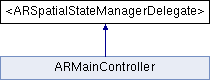

#import <ARSpatialStateManager.h>
Inheritance diagram for <ARSpatialStateManagerDelegate>:

Public Member Functions | |
| (void) | - spatialStateManagerDidUpdate: |
| (void) | - spatialStateManagerLocationDidUpdate: |
Detailed Description
Protocol that should be implemented by users of the ARSpatialStateManagerDelegate class in order to receive updates about changes to the spatial state.
Member Function Documentation
| - (void) spatialStateManagerDidUpdate: | (ARSpatialStateManager *) | manager |
Sent whenever the acceleration, location or heading has changed. This method will be called after spatialStateManagerLocationDidUpdate:.
- Parameters:
-
manager The sender of the message.
| - (void) spatialStateManagerLocationDidUpdate: | (ARSpatialStateManager *) | manager | [optional] |
Sent when the location has changed. This method will be called less often than spatialStateManagerDidUpdate: and therefore allows for more elaborate processing.
- Parameters:
-
manager The sender of the message.
The documentation for this protocol was generated from the following file:
- Sources/ARSpatialStateManager.h
Generated on Tue Jul 6 2010 08:57:31 for iBetelgeuse by
 1.7.0
1.7.0